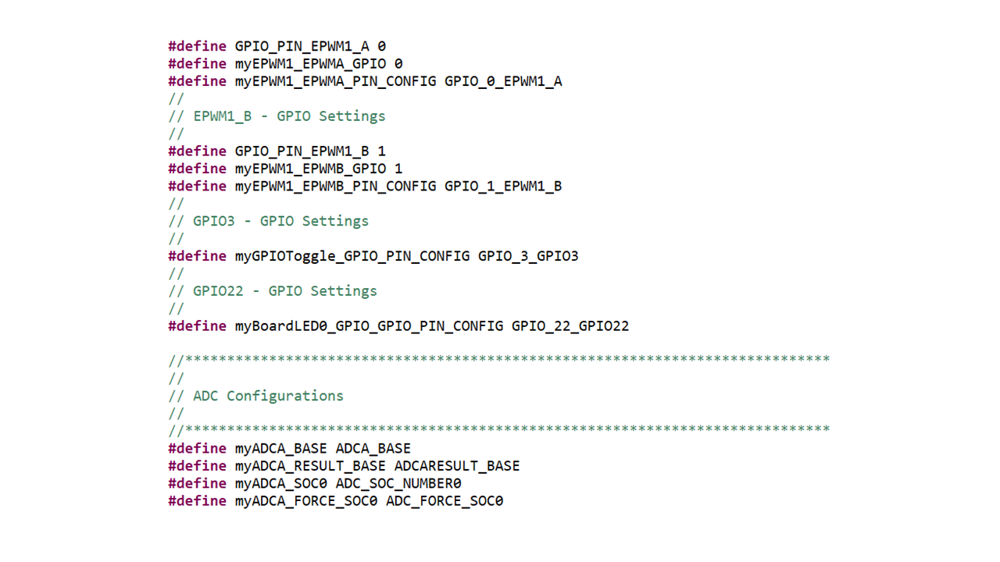
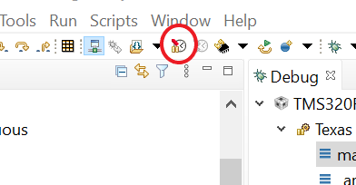

Analog-to-Digital Converter Lab#
The objective of this lab exercise is to become familiar with the programming and operation of the on-chip analog-to-digital converter (ADC). The microcontroller (MCU) will be setup to sample a single ADC input channel at a prescribed sampling rate and store the conversion result in a circular memory buffer. In the second part of this lab exercise, the digital-to-analog converter (DAC) will be explored. This lab should leave readers more knowledgeable about the capabilities of the ADC and DAC modules, as well as how this analog subsystem commonly interacts with other modules.
Note:
This lab is the same as the Analog Systems Lab, but utilizes SysConfig to setup the ADC, PWM, and DAC
Solution#
All solutions are located in the directory: [C2000Ware_Install_Path]/training/device/[device_name].
Introduction#
In this lab exercise, one of the ePWMs will be configured to trigger the SOCA
signal for the ADC at the desired sampling rate. The ADC will use an
end-of-conversion interrupt to prompt the CPU to copy the results of the ADC
conversion into a results buffer in memory. This buffer pointer will be managed
in a circular fashion, such that new conversion results will continuously
overwrite the oldest conversion results in the buffer. In order to generate an
interesting input signal, the code will also alternately toggle GPIO3 high
and low in the ADC interrupt service routine. This pin will be connected to the
ADC input pin, and sampled. Later in the lab, the DAC will be used to generate
a sine wave, which will be sampled by the ADC.
Lab Setup#
Hardware Setup#
You will need the following hardware for this lab:
A C2000 controlCARD or LaunchPad with the supplied USB cable
Jumper wire (at least 2 connections)
Use the supplied USB cable to connect your C2000 board’s USB port to the standard USB Type-A connector in your computer. You should see some LEDs light up on your board. In addition to powering the board, a JTAG communication link is also established between the device and Code Composer Studio. Refer to Getting Started module for more details if needed.
Software Setup#
The following software will need to be installed on your computer:
Note:
For this lab exercise a CCS version 11 or higher is required as well as a C2000Ware version 4 or higher.
Import Empty project#
Our first task is to import an empty project to our Code Composer Studio (CCS) workspace. The basic instructions are as follows:
Open CCS and go to Project→Import CCS Projects. A new window should appear. Ensure that the Select search-directory option is activated.
Click the Browse button and select the
[C20000ware_Install_dir]/training/device/[device]/empty_labdirectory.
Note that the default Windows [C20000ware_Install_dir] isC:/ti/c2000/C2000Ware_4_xx_xx_xx.Under Discovered Projects, you should now see the
lab_[board]_[device]project. Select the appropriate project for either the control card or the launchpad.

Click Finish to import and copy the
lab_[board]_[device]project into your workspace.Rename the project to your liking
“Right-click on the project in Project Explorer pane”. Select ‘Rename’ from the drop down menu and rename the project to ‘c2000_adc_lab’ or a name of your choosing.
Now click the ‘Down Arrow’ located to the left of the imported project to expand it and select lab_main.c. Right-click on the file, and select ‘Rename’ to rename the file to c2000_adc_lab_main.c or a name of your choosing.
Part 1: ADC#
Task 1: Setting up the GPIOs#
We will begin this lab exercise by configuring the required GPIOs within the
.syscfg file of the project. Double click the .syscfg file within the project to
open it.
GPIO 16 will always remain high and GPIO 3 will toggle between a high and low state.
Configure GPIO 16 as an output that is pulled constantly high and is serving as one of the possible ADC inputs. Within SysConfig perform the following steps:
Add a GPIO by clicking the (+) icon next to ‘GPIO’ on the left pane
Set the name of the GPIO as ‘myGPIOHigh’
Set the GPIO as an output
Set the Pin Type as “Pull-up enabled in input mode”
Check the box to enable a write of an initial value
Set the initial value as “1: GPIO state is HIGH”
Now, we have to choose which GPIO we are configuring, in this case GPIO16. Upon expanding the “PinMux” view we can choose the desired GPIO. Follow the steps below:
Click on the three dot icon at the top right of the SysConfig window
Select “Preferences & Actions”
Under preferences, click on the ‘Device Pin Label’ drop down arrow and enable “Device pin name”. This is not part of the default SysConfig settings but allows us to see the pin name along with the pin number
Within the GPIO Mux select GPIO16 as the desired GPIO. The device pin number will vary depending on hardware.
Now, we can add another GPIO (GPIO3). This GPIO will be toggled in the application in order to serve as another possible input to the ADC. Follow the same steps as required to setup GPIO16 but with a name of “myGPIOToggle”.
Note:
The device pin numbers on the images above may vary depending on the device used.
Lastly, is the addition of an LED. This LED will be toggled within the ISR to show that the code is executing properly. Refer to the table below for the GPIO number:
Select GPIO number for your device and board from the table below.
Device |
LaunchPad |
controlCARD |
|---|---|---|
F28379D |
Pin-66 (GPIO-31) |
Pin-66 (GPIO-31) |
F2838x |
n/a |
Pin-66 (GPIO-31) |
F28004x |
Pin-81 (GPIO-23) |
Pin-99(GPIO-31) |
F28002x |
Pin-2 (GPIO-31) |
Pin-2 (GPIO-31) |
F28003x |
Pin-83(GPIO-22) |
Pin-99(GPIO-31) |
F280013x |
n/a |
Pin-35 (GPIO-24) |
F280015x |
n/a |
Pin-41 (GPIO-24) |
The parameters should be filled like below. This name will be referenced in the ADC ISR, so make sure the name is ‘myBoardLED0_GPIO’. Make sure the GPIO number is correct, do not worry about device pin.
Task 2: Initialize the EPWM Module#
The EPWM module will be used to automatically trigger an ADC SOC. The desired EPWM frequency is 50kHz. For more information on the PWM, please review the Control Peripherals module.
We will start by adding a PWM instance within Sysconfig by clicking on the (+) sign next to ‘EPWM’ within the left pane of Sysconfig. Setup the EPWM module in the following way:
Now that we have added an EPWM instance, we will configure the EPWM ‘Timebase’ submodule as follows:
Note:
The image above is representative of the F2807x, F28004x, F2837xD, and F2837xS devices. For other devices the “Sync Out Pulse” default option may be different or there might be a “Sync In Pulse” option. For this lab, we are not configuring the “Sync Out Pulse” or “Sync In Pulse” so leaving all synchronization options at the default state is okay.
Secondly, we will enable ADC SOC triggering through the “Event-Trigger’ submodule as follows:
Task 3: Setup the ADC#
To setup the ADC we need to add an ADC instance within SysConfig by clicking on the plus sign next to ADC on the left most pane of the SysConfig start menu. Setup the ADC in the following way:
Note:
The image above is for devices with an ADC-Type 4, for devices with an ADC Type-5 you will not have the ‘ADC Resolution Mode’ or ‘ADC Signal Mode options’
We will now configure the ADC SOC (start of conversion). The trigger for SOC0 is epwm1

Next, we need to setup the ADC interrupt. In this case ADCINT1 will generate an interrupt at the end of the conversions (EOC). This is done in this way so that when we read the ADC results from within the ISR the ADC conversion results are ready.
Lastly, we need to setup the ADC interrupt. This is done by enabling the ADC interrupt and configuring the ADC interrupt handler name.
ASYSCTL
If your device has an ADC of Type-5 you will also need to configure ASYSCTL as shown below.
Task 4: Setup the ADC ISR#
Now that we have configured the ADC and PWM modules within SysConfig, we can switch to the application code portion of this lab. Within the project, click on the .c file under the name you chose.
Within the .c file we need to write the code that will be executed every time there is an ADC interrupt, otherwise known as the ISR (interrupt service routine).
This project requires defining ADCBufPtr (variable used to place ADC results in the buffer). The
following code is used to declare the variable within the ISR as well as the variable we will
use to change the state of the LED.
Note: The name of the ISR function is what we defined earlier within the SysConfig configuration for the ADC.
interrupt void INT_myADCA_1_ISR(void)
{
static uint16_t *AdcBufPtr = AdcBuf;
static volatile uint16_t LED_count = 0;
lab_main.c: INT_myADCA_1_ISR
The next part of the ISR is used to store the ADC results within the buffer. We also need to handle the case where our buffer becomes full. One way to do this is to overwrite previous values.
// Read the ADC Result
*AdcBufPtr++ = ADC_readResult(myADCA_RESULT_BASE, myADCA_SOC0);
// Brute Force the circular buffer
if (AdcBufPtr == (AdcBuf + ADC_BUF_LEN))
{
AdcBufPtr = AdcBuf;
}
lab_main.c: INT_myADCA_1_ISR
The next step is to toggle a GPIO so that we can use this as an ADC input.
// Toggle the pin
if(DEBUG_TOGGLE == 1)
{
GPIO_togglePin(myGPIOToggle);
}
lab_main.c: INT_myADCA_1_ISR
Now we have the option to toggle an LED on the device. This will tell us that the program is functioning properly and indeed entering the ISR.
Notice how we toggle the LED whenever LED_count > 25000. This corresponds to ~ 0.5 sec/ toggle. We arrive at this by solving for x.
(1/50000 sec/sample)(1 samples/interrupt)(25000 interrupts/toggle) = (x sec/toggle)
(1/50000 sec/sample)(1 samples/interrupt)(25000 interrupts/toggle) = (0.5 sec/toggle)
if(LED_count++ > 25000) // Toggle slowly to see the LED blink
{
GPIO_togglePin(myBoardLED0_GPIO); // Toggle the pin
LED_count = 0; // Reset the counter
}
lab_main.c: INT_myADCA_1_ISR
Lastly, we must acknowledge the PIE group as well as clear the interrupt status flag so that we can continue to service interrupts in the future.
Interrupt_clearACKGroup(INT_myADCA_1_INTERRUPT_ACK_GROUP);
ADC_clearInterruptStatus(myADCA_BASE, ADC_INT_NUMBER1);
} // End of ADC ISR
lab_main.c: INT_myADCA_1_ISR
Note:
Notice that throughout the .c file, the naming convention
generated by SysConfig was followed. Below is a snippet taken from the
board.h file located within the project’s Generated Source files. Do not edit
board.h directly, as your changes will be overwritten when the file is
autogenerated from the .syscfg file.

Task 5: Setup the .c file#
The last thing we have to do is define any variables we are using throughout the project and setup the content within main() which includes device initialization.
We begin by including the sysconfig generated header file board.h. This should
already be included by default. Do not edit board.h directly, as your changes
will be overwritten when the file is autogenerated from the .syscfg file.
//
// Included Files
//
#include "board.h"
lab_main.c
Then we define ADC_BUF_LEN, the length of our ADC value buffer and the buffer itself
//
// Global variables and definitions
//
#define ADC_BUF_LEN 50
uint16_t DEBUG_TOGGLE = 1; // Used for real-time mode
uint16_t AdcBuf[ADC_BUF_LEN]; // ADC buffer allocation
lab_main.c
Next, we need to declare the functions used within the project. In this project, SysConfig is used for all of the ADC/PWM setup so we only need to declare the ISR.
//
// Function Declarations
//
_interrupt void INT_myADCA_1_ISR(void);
lab_main.c
Lastly, we define the contents within main() which includes device initialization and peripheral setup:
void main(void)
{
// CPU Initialization
Device_init();
Interrupt_initModule();
Interrupt_initVectorTable();
// Configure the GPIOs/ADC/PWM through SysConfig generated function found within
// board.c
Board_init();
// Enable global interrupts and real-time debug
EINT;
ERTM;
// Main Loop
while(1){}
}
main() within lab_main.c
Task 6: Build the code#
Make sure your board is connected to your computer. If you are using a LaunchPad then set the LaunchPad target configuration as the active one within the project. This is done by expanding the
TargetConfigsfolder within the folder and right-clicking on the LaunchPad ccxml and selecting “Set as Active Target Configuration”.Click the “Build” button and watch the tools run in the Console window. Check for errors in the Problems window, and fix any that may have occurred.
Setup a debug and target configuration. For more information on launching a target configuration refer to Getting Started → “Build and Load the Project” → “Setup Target Configuration”.
Task 7: Run the Code#
Press the debug button to transition into the debug perspective.
Now that you are in the debug perspective, the program should be paused at the first line of code in
main(). Press the resume icon in order for the code to start running.Open a memory browser by going to the top menu and selecting
Viewand thenMemory Browserfrom the drop down list. In memory browser search bar type&AdcBufand enter. This will allow us to view the contents of the ADC results buffer.
Using a jumper wire, connect the
ADCINA0pin toGND. Then run the code using theResumebutton, andSuspendit after a few seconds. Verify that the ADC results buffer contains the expected value of ~0x0000.
Device |
ADCINA0 Pin |
EPWM1A Pin |
|---|---|---|
F28379D |
30 |
9 |
F2838x |
n/a |
9 |
F28004x |
70 |
9 |
F28002x |
69 |
9 |
F28003x |
70 |
9 |
F280013x |
n/a |
9 |
F280015x |
n/a |
9 |
Important
Exercise care when connecting any jumper wires to the LaunchPad or ControlCARD header pins since the power to the USB connector is on!
Adjust the jumper wire to connect the
ADCINA0pin to+3.3VorGPIO16which we set high. ThenResumethe code again, andSuspendit after a few seconds. Verify that the ADC results buffer contains the expected value of ~0x0FFF.
LaunchPad
Device |
ADCINA0 Pin |
GPIO16 Pin |
|---|---|---|
F28379D |
30 |
33 |
F2838x |
n/a |
n/a |
F28004x |
70 |
15 |
F28002x |
69 |
76 |
F28003x |
70 |
76 |
F280013x |
n/a |
n/a |
F280015x |
n/a |
n/a |
ControlCARD
Device |
ADCINA0 Pin |
GPIO16 Pin |
|---|---|---|
F28379D |
9 |
67 |
F2838x |
9 |
67 |
F28004x |
9 |
67 |
F28002x |
9 |
67 |
F28003x |
9 |
67 |
F280013x |
9 |
67 |
F280015x |
9 |
67 |
Adjust the jumper wire to connect the
ADCINA0toGPIO3. ThenResumethe code again, andPauseit after a few seconds. Examine the contents of the ADC results buffer (the contents should be alternating ~0x0000 and ~0x0FFF values).
LaunchPad
Device |
ADCINA0 Pin |
GPIO3 Pin |
|---|---|---|
F28379D |
30 |
37 |
F2838x |
n/a |
n/a |
F28004x |
70 |
55 |
F28002x |
69 |
37 |
F28003x |
70 |
37 |
F280013x |
n/a |
n/a |
F280015x |
n/a |
n/a |
ControlCARD
Device |
ADCINA0 Pin |
GPIO3 Pin |
|---|---|---|
F28379D |
9 |
55 |
F2838x |
9 |
55 |
F28004x |
9 |
55 |
F28002x |
9 |
55 |
F28003x |
9 |
55 |
F280013x |
9 |
55 |
F280015x |
9 |
55 |
Open and set up a graph to plot a 50-point window of the ADC results buffer. Click: Tools → Graph → Single Time and set the following values (then press
ok):
Important
Note: If you do not see CCS menu Tools → Graph, please refer to Getting Started (Setting CCS for graph) to see the instruction on how to enable CCS graphing tool in your perspective.
Recall that the code toggled the
GPIO3pin alternately high and low. If you had an oscilloscope available to displayGPIO3, you would expect to see a square-wave.
Why does Code Composer Studio plot resemble a triangle wave? What is the signal processing term for what is happening here?
We are under sampling the signal. If we were to increase our sampling frequency we would see that it is actually a square wave.
Task 8: Use Real-Time Emulation#
The memory and graph windows displaying AdcBuf should still be open. The jumper wire between
ADCINA0andGPIO3should still be connected. In real-time mode, we will have our window continuously refresh at the default rate. To view the refresh rate click: Window → Preferences… and in the section on the left select the “Code Composer Studio” category. Click the sign (‘+’ or ‘>’) to the left of “Code Composer Studio” and select “Debug”. In the section on the right notice the default setting. Click Cancel.
Note:
Decreasing the “Continuous refresh interval” causes all enabled continuous refresh windows to refresh at a faster rate. This can be problematic when a large number of windows are enabled, as bandwidth over the emulation link is limited. Updating too many windows can cause the refresh frequency to bog down. In this case you can just selectively enable continuous refresh for the individual windows of interest.
Next we need to enable the graph window for continuous refresh. Select the “Single Time” graph. In the graph window toolbar, left-click on the yellow icon with the arrows rotating in a circle over a pause sign. Note when you hover your mouse over the icon, it will show “Enable Continuous Refresh”. This will allow the graph to continuously refresh in real-time while the program is running.
Enable the Memory Browser for continuous refresh using the same procedure as the previous step.
To enable and run real-time emulation mode, click the “Enable Silicon Real-time Mode” toolbar button. A window may open and if prompted select Yes to the “Do you want to enable real-time mode?” question. This will force the debug enable mask bit (DBGM) in status register ST1 to ‘0’, which will allow the memory and register values to be passed to the host processor for updating (i.e. debug events are enabled).

While in real-time mode, carefully remove and reconnect the jumper wire. The values should be continuously updating in the memory browser if real-time mode is working properly.
Suspendthe code.So far, we have seen data flowing from the MCU to the debugger in real-time. Now, we will flow data from the debugger to the MCU.
Open and inspect the project’s .c file “lab_main.c”. Notice that the global variable
DEBUG_TOGGLEis used to control the toggling of theGPIO3pin. This is the pin being read with the ADC.Highlight
DEBUG_TOGGLEwith the mouse, right click and select “Add Watch Expression…” and then select OK. The global variableDEBUG_TOGGLEshould now be in the Expressions window with a value of “1”.Enable the Expressions window for continuous refresh.
Run the code in real-time mode and change the value to “0”. Are the results shown in the memory and graph window as expected? Change the value back to “1”. As you can see, we are modifying data memory contents while the processor is running in real-time (i.e. we are not halting the MCU nor interfering with its operation in any way)! When done, halt the CPU.
This concludes Part 1: ADC. Terminate the active debug session using the Terminate button. This will close the debugger and return Code Composer Studio to the CCS Edit perspective view.
Part 2: DAC#
This is a continuation of Part 1. The purpose of this part of the lab is to generate a sine wave utilizing the DAC and feed that to the ADC as an input .
Note:
Part 2 is only intended for devices which have a buffered DAC. We will be using the same code as before but will add a few lines to support the DAC and enable us to generate a sine wave.
Task 1: Setup the DAC#
We will start by setting up the configuration for the DAC module. This part will be done through
SysConfig. Open the .syscfg file within the project and add a DAC instance by selecting
the (+) next to ‘DAC’ on the left side of the SysConfig window.
The key elements of initializing the DAC are to set a reference voltage, determine a load mode (when the DAC converts the value in the shadow register), and enable output.
We will select DACB as our DAC instance, use the ADC VREFHI reference voltage, set up the load mode to be “Load on next SYSCLK”, and lastly the shadow value (in this case 800).
For devices with a DAC of Type 2 and above we will
also need to set the gain. For more info on DAC types and device peripherals, refer to
the Peripherals Reference Guide.
DAC of Type 1:
DAC of Type 2:
In order to setup the DAC on a device with DAC Type 2 we need to set the correct ADC reference voltage. This is done through the ‘ASYSCTL’ options within SysConfig. Setup the ADC to have an internal reference voltage of 1.65V (3.3V Conversion Range).
Then we setup the DAC with a gain mode of 2.
Task 2: Additions to the (.c) file#
Keeping the same code as before, go to the global variables section and add the below table as well as a few global variables. The global variables will enable us to change the DAC output in real time and the lookup table will allow us to generate a sine wave.
uint16_t DacOutput;
uint16_t DacOffset;
uint16_t SINE_ENABLE = 0;
// quadrature look-up table: contains 4 quadrants of sinusoidal data points
#define SINE_PTS 25
int QuadratureTable[SINE_PTS] = {
0x0000, // [0] 0.0
0x1FD4, // [1] 14.4
0x3DA9, // [2] 28.8
0x579E, // [3] 43.2
0x6C12, // [4] 57.6
0x79BB, // [5] 72.0
0x7FBE, // [6] 86.4
0x7DBA, // [7] 100.8
0x73D0, // [8] 115.2
0x629F, // [9] 129.6
0x4B3B, // [10] 144.0
0x2F1E, // [11] 158.4
0x100A, // [12] 172.8
0xEFF6, // [13] 187.2
0xD0E2, // [14] 201.6
0xB4C5, // [15] 216.0
0x9D61, // [16] 230.4
0x8C30, // [17] 244.8
0x8246, // [18] 259.2
0x8042, // [19] 273.6
0x8645, // [20] 288.0
0x93EE, // [21] 302.4
0xA862, // [22] 316.8
0xC257, // [23] 331.2
0xE02C // [24] 345.6
};
lab_main.c
Now navigate to the ADC ISR function and add a static variable that will be
used to index the lookup table we recently initialized. We will also add some code
to write to the DAC when we are in the ISR. Notice how the most important piece of
code here is DAC_setShadowValue() which places the next value to be converted
by the DAC into a shadow register.
Add this code before acknowledging and clearing the interrupt status.
// Write to DAC-B to create input to ADC-A0
static uint16_t iQuadratureTable = 0; // Quadrature table index
if(SINE_ENABLE == 1)
{
DacOutput = DacOffset + ((QuadratureTable[iQuadratureTable++] ^ 0x8000) >> 5);
}
else
{
DacOutput = DacOffset;
}
if(iQuadratureTable > (SINE_PTS - 1)) // Wrap the index
{
iQuadratureTable = 0;
}
DAC_setShadowValue(myDACB_BASE, DacOutput);
lab_main.c: INT_myADCA_1_ISR()
Task 3: Build and Run#
Build the code and fix any errors.
Open a debug perspective and add
SINE_ENABLEandDacOffsetto the expression windows.Adjust the jumper wire to connect the
ADCINA0pin to theDACBpin.For devices showing ‘n/a’, there is no launchpad available for that device.
LaunchPad
Device |
ADCINA0 Pin |
DACB Pin |
|---|---|---|
F28379D |
30 |
70 |
F2838x |
n/a |
n/a |
F28004x |
70 |
30 |
F28002x |
69 |
n/a |
F28003x |
70 |
n/a |
F280013x |
n/a |
n/a |
F280015x |
n/a |
n/a |
ControlCARD
Device |
ADCINA0 Pin |
DACB Pin |
|---|---|---|
F28379D |
9 |
11 |
F2838x |
9 |
11 |
F28004x |
9 |
11 |
F28002x |
9 |
n/a |
F28003x |
9 |
11 |
F280013x |
9 |
11 |
F280015x |
9 |
11 |
Run the code
At this point, the graph should be displaying a DC signal near zero (if you closed the graph, reopen it). Click on the
DacOffsetvariable in the Expressions window and change the value to 800. This changes the DC output of the DAC which is applied to the ADC input. The level of the graph display should be about 800 and this should be reflected in the value shown in the memory buffer (note: 800 decimal = 0x320 hex).Enable the sine generator by changing the variable
SINE_ENABLEin the Expressions window to 1.You should now see a sine wave in the graph window.
You have now completed the lab. Terminate the active debug session using theTerminatebutton. This will close the debugger and return Code Composer Studio to the CCS Edit perspective view. Also close the project by right clicking on the project in theProject Explorer.
Full Solution#
The full solution to this lab exercise is included as part of the C2000Ware SDK. Import the project from
[C2000Ware_Install_Path]/training/device/[device_name]/analog_subsystems/lab_adc.
Note that the solution includes code for both the ADC and DAC, but it will still compile on devices that do not have a buffered DAC.
Feedback
Please provide any feedback you may have about the content within C2000 Academy to: c2000_academy_feedback@list.ti.com